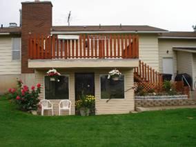
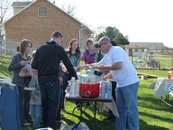
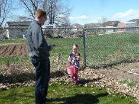
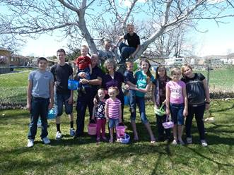

Chapter 53 - HOME IN CLINTON AT 1098 W 1300 N – MARCH 2005 TO NOV. 2014
While we were on our mission, Scott graduated from college and got a good job so he and Mishelle wanted to buy a home. We wanted to sell our home so we could build up on our property in Star Valley, Wyoming so we asked them if they would like to buy our home. They said they couldn’t afford it. We asked how much they felt they could pay for a home and when they told us, we lowered our price to that amount - $25,000 less than we had asked before when putting it up for sale. Ken figured it out and knew we would be getting $50,000 from our equity if we sold it to Scott & Mishelle and he felt that would be enough to purchase the lumber, cement and other building materials to build our home in Star Valley and we wanted to help them out and wanted to keep this home in our family, so we did sell it to them. We had given Mike our power of attorney so he was able to sign the papers for us. He was concerned about us dropping the price that low, but did what we asked him to do. To our surprise, the cost of lumber, cement and the other building materials had gone up three times while we were on our mission and now that we were home, Ken realized that we couldn’t build our home for the $50,000. He still wanted to build it, but we would have had to get a loan and either one or both of us would have had to go to work to pay the loan off. I had felt good about us building in Star Valley before the mission. I knew that David & Shauna lived in Idaho Falls so just a half hour or so away from us and with Sandi & Terry having their cabin there, there would be family around for us to be with, but while we were away on our mission, David & Shauna moved to Utah. They had wanted to be closer to family and David was able to be transferred down here. They bought a home in Enterprise, which is close to Morgan. The couple, who had purchased the cabin with Sandi & Terry, built them a big new home so couldn’t afford their share of the cabin so backed out. Sandi & Terry didn’t feel they could afford the cabin by themselves so asked our family and other friends if any wanted to go in on it with them. None did, so they ended up selling their cabin, much to Sandi’s sorrow as she loved that cabin and had furnished and decorated it so beautifully. Her & Terry, or her and her daughters, or just her alone sometimes went there and enjoyed it. They invited Ken and I to go with them sometimes, and we loved being with them and loved the cabin and area also. My Uncle June and his 2nd wife, Banita, lived in an adjoining town so Sandi would always stop and visit them while she was there. She and Uncle “George” became really close. (He was named after his father, so was given the name of George Jr. All the family called him “June” (for Jr.) so they didn’t get confused with the two Georges. Uncle June loved Sandi and looked forward to her visits, so did Banita. Ken and I visited them also when we were there. When we realized that we would be alone up in Star Valley as Uncle June wasn’t there either, as he had passed away and Banita moved back to Utah to be close to her daughters, I wasn’t as anxious to build up on our property.
Ken and I drove up there and I prayed there among the trees and I didn’t have the good feeling that I had had before. I thought of the cold, hard winters and that if Ken got sick during a winter and had to go to the hospital, which was several miles away in another town, I would be really nervous driving on those icy roads and I would be nervous being there without our family to help us. I have always wanted to be close to my family so I could go to our grandchildren’s ball games, recitals and other special events and I wanted to be close so I could invite them for Sunday dinners and spend the holidays with them. If we lived here in Star Valley, that wouldn’t be the case as it is four hours away from most of them and five hours away from Sandi, Terry & their family and Mike, Becky & their family, and it would put another four hours on our already twelve hours to Shellie & Roy’s home. I know why I had the good feeling before, but didn’t now. It was because it was such a good investment. We bought the land for $10,000 and we sold it for $60,000. If we hadn’t sold it at that time, the economy went bad and the land dropped way down in value. The Lord blessed us as He knew we would need the money to live on.
Bob & Carroll had enjoyed having us live in the basement apartment with Mom. They didn’t want anyone else to live here, but they invited us to do so. Bob said “Your furniture is already here, why not move back in, and you can share the utilities and other expenses with us.” I felt that was our answer. Ken wasn’t too happy about that as it had always been his dream to build his own home and he had already drawn up the plans for our home. I loved the plans too and I know it would have been a beautiful home, but I was worried that since Ken would have to get a job, (me too probably) that it would be too hard on him to work and then come back and work on our home, and work all day on Saturdays. It was the same fear I had when he wanted to build our home, while he was working, when we bought our home in Layton. It was really hard on his health when he built this basement apartment for their mother. When he had built this apartment, I loved it and said “I could retire in this apartment”, but at that time, I never thought I would be doing it and now we were.
We love the ward, there are several couples around our age, who love the gospel and have gone on missions too. Two of the couples are our neighbors here on 1300 N. We have all ages in our ward, which makes it a great ward. Ken was again called into the High Priest Group Leadership. He was first assistant to Morgan Thomas, who is the Group Leader. Charles Saunders is the second counselor. Charles and Carolyn and Ken and I love to play games so we try to take turns getting together at each other’s home once a month. We have invited our back-yard neighbors, Marilyn and Kelly Bodily to join with us as they love to play games also. Their daughter, Jill, who we love and her husband came over one night and we had fun playing games with them. They were living with Marilyn and Kelly at the time, but have since moved to their own apartment. They now have a cute baby daughter.
Our Bishop, Steve Smith, called both Ken and I to be Family History Consultants. We were excited, especially me as I love Family History. There was so much to learn. We took classes at the Ogden Family History Center, we volunteered to serve at the Clearfield Family History Center and was trained there. We served each Tuesday evening from 6 to 9 pm. We enjoyed the others who served there and we learned a lot as we helped others register and find ancestors. They also called Marie McEntire, a single lady in her 50s as a F.H. Consultant, so Marie and I met with several sisters in our ward, at their homes, to help them and teach them about Family History. Ken and I were asked to teach the Young Women in our ward, during their mutual night, how to register on FamilySearch.org and also how to do indexing. That was an enjoyable evening. We were also asked to show the Priesthood/Relief Society at one of our 5th Sunday meetings, how to do family history and indexing. We used our Power Point Projector. We didn’t have enough time to show them all that we hoped to. Marie, Ken and I were asked to take the Laurel and Priest representatives from our ward to the Family History Center in Ogden and there help them learn about Family History. All the wards in our stake were there and did this. We did this one week and the 2nd week, we taught them at our ward building. Marie, Ken and I taught several Family History classes during Sunday School. As we were about to teach another class, our bishop asked that instead of teaching a class, we just open up the doors to the computer room and let whoever wanted to come during Sunday School, to come meet with us and we could help them on an individual basis. This was a good idea, and some did come, but after a while the Ward Mission Leader asked the Bishop if they could use our room to teach their investigator class/Gospel Essentials. This was granted so we didn’t do Family History again on Sundays. We were disappointed that this class couldn’t find another room. They could have, but they wanted our large room. Ken and I attended several Family History conferences at different stake centers and also at the ?? in Salt Lake City
. I kept taking online classes and watching F.H. videos for Family History Consultants on FamilySearch.Org. I also spent time trying to find more of my ancestors who needed their work done. I was able to find a couple, but that was all. Ken and I went to the Bountiful Temple and had James Harris sealed to his parents and siblings. That was a great experience. We felt the spirit strongly as did the sealer and others in the room, so we knew he was happy to have this work done for him. I was also able to get my brother, Hal, sealed to his wife, Jean, and then their daughter, Cindi’s work done and her sealed to her parents. We took Georgia with us and she was proxy for Cindy, Ken was for Hal, and I was for Jean. We were thankful to have them sealed together.
You can add photos and stories of your ancestors, so I have added many photos and I have gathered many stories. We were released from these positions when we went on our mission to California, but when we returned, the Bishop called us in and asked if we would again fulfill the positions of Family History Consultants. I was excited, not sure if Ken was, as it was harder for him and he had a hard time getting motivated. He did some great things, however, getting his cousins involved in Family History, especially one, whose mother and father had been killed in a car accident when she and her brother and sister were small. They were raised by grandparents and hadn’t been involved with the Hill family relatives that much. They also were not close with each other, but this made a difference in their lives as Ken found a baby brother who they didn’t know about, who died shortly after birth. Ken also got interested in doing indexing and spent hours doing this and really enjoyed it. He also taught others, especially a widower, who is a neighbor, Dee Francom. Dee has really enjoyed it too and since he has diabetes, and doesn’t get out much except to church and the store, this has helped fill his time and given him something to do which he feels is important, which it is. Ken and I were released this past year (2013) and I were called to teach the 10-year old’s in primary. I team teach with a sister who has been less active, but has determined to start coming regularly and even went to the temple to take out her endowments. We have a cute class of mostly girls and they are attentive and well behaved. I already had a second calling to serve on the Relief Society Committee. These two callings keep me busy. Ken is still serving as 1st assistant in the High Priest Group Leadership with Morgan and Charles.
We have enjoyed our home and have enjoyed our association with Bob and Carroll. Bob likes to fix meals and cook, so he would usually prepare Sunday dinner and when we hadn’t invited our family members to dinner here or if they hadn’t invited us to their homes, then Bob would want us to come and eat with them. Sometimes I would make a salad, and with our diet, I would make brown rice for us as he would make potatoes for him and Carroll. Ken and I enjoy playing Canasta with Bob & Carroll. It’s usually the men against the ladies and it’s about a 50/50 tossup on who wins.
Mark, Bob & Ken’s cousin, who had come to help care for his mother, Aunt Vida, stayed on after his mother died and rented a bedroom from Bob & Carroll as he didn’t want to live in the basement with Ken’s and Bob’s mother as they didn’t get along. Ken’s Mom didn’t want him down here either. Ken’s mom died prior to us going on our mission to the Philippines, but Mark stayed on. I guess Bob & Carroll had told him that he could stay for a couple of months until he found something else. Well, he didn’t have any intention of finding something else, as he liked it here. Anyway, he always ate Sunday dinners with us too. We had a large garden and Mark was excited about that. We worked out a deal that he would mainly take care of the garden (water and weed) and Ken and I, and Bob & Carroll would pay for the plants, seeds and other expenses and we would help plant the garden and help harvest it. That way, Mark could have what he wanted and needed from the garden, and so could the rest of us. It worked pretty well. But Mark had a different personality. He felt he was always right and he was overbearing about it. I could see why he was married three times and each time his wife divorced him. None of his children are close to him either. He was a good dentist, but lost his practice and equipment because he fought the dental association because he had found out that mercury fillings were dangerous for our health. He couldn’t win and it ruined him, he lost everything including his last family.
Mark was taking advantage of Bob & Carroll by eating their food without asking, by not only using their washer & dryer, but also using their laundry detergent. He burned some of their pans, he would argue with them and spoke cross to Bob a lot of the time. Finally, Carroll had had enough and she told Bob, she wanted him out. She wanted her privacy and wanted his bedroom for her children to be able to use when they came to visit as Kathy lives in Texas and Bruce in Arizona. When they told him, they wanted him to move out, he was upset and didn’t do anything about it. After a while, Bob spoke to him again about it, but he said he couldn’t afford to move. Bob gave him some money to put down on an apartment, but he used it to pay bills, so that upset them more.
Finally, Bob told him that either he was out by January 1st or Bob’s kids would help him move Mark’s things out on the lawn. It was a bad scene and he blamed Ken, for some unknown reason. It wasn’t Ken’s idea, although we agreed with Bob & Carroll, but it was them that wanted him out. He found an apartment (while Ken and I were visiting Shellie & family in Arizona) and our Bishop and other ward members helped him move down to Provo in a student cheap apartment. Don’t know how he was able to get that. Maybe he told the landlord that he would be taking classes at BYU. Bishop was so amazed at all the junk Mark had and took down with him. He said they stacked it in his apartment and there was hardly room for him to walk to the bedroom and bathroom, and that the cupboards and table were filled too.
Mark’s son and his wife lived in America Fork so he wanted to live closer to them. They did invite him for dinner once in a great while. He died a few months later. He was in his late 80s. The landlady found him dead in his apartment. We never found out the cost, but we assume it was a heart attack. Mark had a gold watch on a gold chain. He used this to see whether food or different things were good for him. He argued with our Bishop and Stake President over what the church mills sold and should sell to church members. He just felt they should stick with the basis – wheat, rice, powdered milk, etc., but not things like pancake mix, muffin mix, chocolate milk, etc. He was a different guy. He was nice some times, but difficult at other times.
While living in Clinton, in the basement apartment of Bob & Carroll’s home, which Ken built for their mother, we had a hugh back yard. When Mark moved to Provo, he didn’t take his volleyball poles, so Ken put the fittings in the ground so we could just slip the poles into them when our family would come for family backyard parties and barbecues. We had several each summer. Our children and grandchildren love to play volleyball so we played that at each family party. I love to watch them play. Each family would bring their own meat and a side dish. I usually asked Becky if she could bring her delicious broccoli and bacon salad as I love that and everyone else does also. Mishelle makes wonderful rolls, so she would bring rolls at times. All our daughters and daughters-in-laws make delicious food. I usually made a potato salad and an Acini de pepe salad. We bought two “Lifetime” picnic tables, from a neighbor who worked at “Lifetime” in Layton, and we have surely used them a lot and enjoyed them. We also bought two smaller picnic tables so our young grandchildren could sit at them. Our apartment wasn’t large enough to have all our family inside at one time, but in the summer, it worked great. In the winter, we would invite one or maybe two families at a time for Sunday dinner or for special occasions.
We also had Easter Egg Hunts each year in our backyard. Those were fun. I would buy lots of plastic Easter eggs and put candy in some and money in some. I would color lots of boiled eggs also. Sometimes some of our younger grandchildren would come and help me color the eggs. Ken and I would hide the younger grandchildren’s eggs in the back yard and the older grandchildren’s eggs in the far back of the property where we had our chicken coop, shed, rabbit pens and large garden area. I bought Easter baskets for them at the Dollar Store and gave them a list of how many money eggs, candy eggs and boiled eggs each of them could find and keep. On the signal they would all run around to find their eggs, it was so fun watching them and seeing the excitement on their faces. We would usually start the Easter Egg Hunt about 10 am and then we would have a barbecue afterward, play volleyball and visit. Good memories!